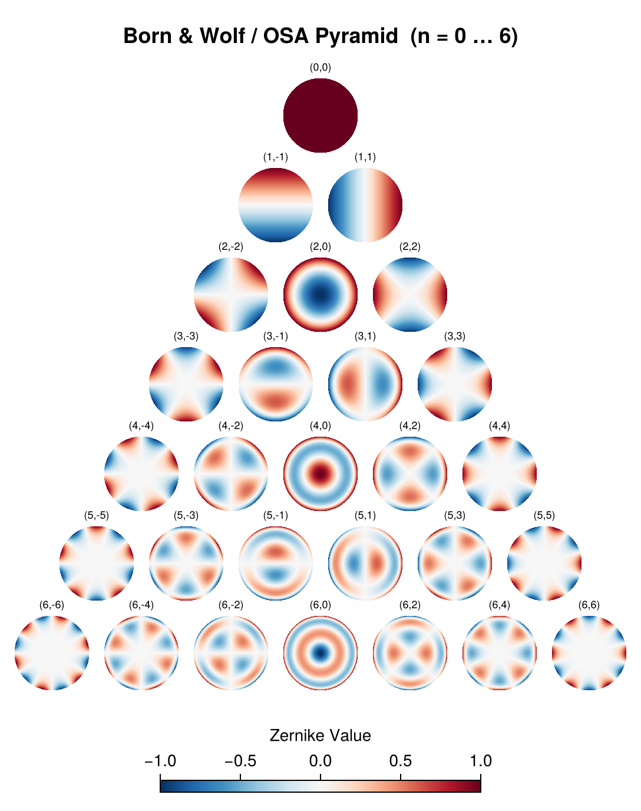
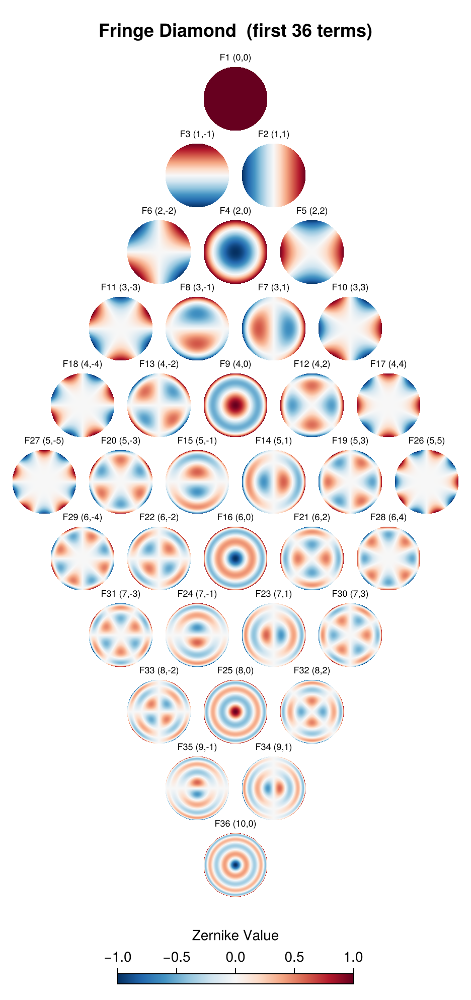

using PhaseBases
using CairoMakie
CairoMakie.activate!(; type="png")Zernike Pyramids: Visualizing Ordering Conventions
Zernike polynomials are traditionally displayed by arranging them in a table indexed by radial order $n$ (rows) and azimuthal frequency $m$ (columns). In the Born & Wolf / OSA convention this gives a triangular "pyramid."
However, the Fringe (University of Arizona) convention orders the polynomials by increasing $n + |m|$, so that terms of similar optical significance are grouped together. When arranged by their $(n, m)$ pairs, the Fringe ordering traces a diamond-shaped pattern rather than a triangle.
This page renders both layouts.
Setup
We create a moderately sized Zernike basis and a helper function that draws a single polynomial at a given position.
zbas = ZernikeBW(128, 10) ## 128×128 grid, polynomials up to radial order 10
ap = mask(zbas) ## NaN outside aperture — clean display
# Cell size, step, and padding (pixels).
# CELL — width/height of each individual heatmap.
# STEP — centre-to-centre distance between adjacent cells (must be ≥ CELL).
const CELL = 64
const STEP = 76
const PAD_H = 50 ## horizontal padding on each side
const PAD_T = 60 ## space reserved for the title at the top
const PAD_B = 20 ## bottom padding
# Place a single Zernike heatmap centred at pixel (cx, cy) in fig.
function place_zernike!(fig, cx, cy, osa_arr_idx; label="")
half = CELL / 2
ax = Axis(
fig;
bbox=BBox(cx - half, cx + half, cy - half, cy + half),
aspect=DataAspect(),
title=label,
titlesize=9,
titlefont=:regular,
)
heatmap!(
ax,
(elements(zbas, osa_arr_idx) .* ap)';
colormap=reverse(cgrad(:RdBu)),
colorrange=(-1, 1),
)
hidedecorations!(ax)
hidespines!(ax)
return ax
endplace_zernike! (generic function with 1 method)Born & Wolf / OSA Pyramid
In the OSA convention, polynomials are ordered by increasing $n$, and within each order by increasing $m$ (from $-n$ to $+n$ in steps of 2). Laying them out on a grid of $(n, m)$ gives the classic triangle:
(0,0)
(1,-1)(1,1)
(2,-2)(2,0)(2,2)
(3,-3)(3,-1)(3,1)(3,3)
…maxn = 6 ## show orders 0 through 6
bw_width = ((2maxn + 1) * STEP + 2PAD_H) / 2
bw_height = (maxn + 2) * STEP + PAD_T + PAD_B
bw_ox = bw_width / 2
bw_top_y = bw_height - PAD_T - STEP / 2
fig_bw = Figure(; size=(bw_width, bw_height))
text!(
fig_bw.scene,
"Born & Wolf / OSA Pyramid (n = 0 … $maxn)";
position=(bw_width / 2, bw_height - PAD_T / 2),
align=(:center, :center),
fontsize=18,
font=:bold,
)
for n in 0:maxn
for m in (-n):2:n
arr_idx = nm_to_osa_j(; n=n, m=m) + 1 ## 1-based position in zbas
cx = bw_ox + m * (STEP / 2)
cy = bw_top_y - n * STEP
place_zernike!(fig_bw, cx, cy, arr_idx; label="($n,$m)")
end
end
Colorbar(
fig_bw[2, :];
colormap=reverse(cgrad(:RdBu)),
limits=(-1, 1),
width=bw_width * 0.5,
height=PAD_B * 0.5,
label="Zernike Value",
vertical=false,
)
fig_bw
Each row has $n+1$ polynomials, forming the familiar triangular pyramid. The top is piston $(0,0)$, and each subsequent row adds one more azimuthal frequency on each side.
Fringe / University of Arizona Diamond
The Fringe ordering groups polynomials into "rings" of constant $n + |m|$. Plotted by their $(n, m)$ coordinates, they trace a diamond (or rotated square) rather than a triangle, because each ring interleaves different radial orders.
Below we show the first 36 Fringe terms (indices 1–36). With a basis of order 10, all 36 terms — including the bottom-apex terms F34=(9,-1), F35=(9,1), F36=(10,0) — are fully rendered.
n_fringe = 36 ## number of Fringe terms to display
fringe_nm = [fringe_j_to_nm(j) for j in 1:n_fringe]
max_n_fr = maximum(nm.n for nm in fringe_nm)
max_abs_m = maximum(abs(nm.m) for nm in fringe_nm)
fr_width = ((2max_abs_m + 1) * STEP + 2PAD_H) / 2
fr_height = (max_n_fr + 2) * STEP + PAD_T + PAD_B
fr_ox = fr_width / 2
fr_top_y = fr_height - PAD_T - STEP / 2
fig_fr = Figure(; size=(fr_width, fr_height))
text!(
fig_fr.scene,
"Fringe Diamond (first $n_fringe terms)";
position=(fr_width / 2, fr_height - PAD_T / 2),
align=(:center, :center),
fontsize=18,
font=:bold,
)
for j in 1:n_fringe
n, m = fringe_nm[j].n, fringe_nm[j].m
arr_idx = nm_to_osa_j(; n=n, m=m) + 1
arr_idx > length(zbas) && continue ## basis too small for this term
cx = fr_ox + m * (STEP / 2)
cy = fr_top_y - n * STEP
place_zernike!(fig_fr, cx, cy, arr_idx; label="F$j ($n,$m)")
end
Colorbar(
fig_fr[2, :];
colormap=reverse(cgrad(:RdBu)),
limits=(-1, 1),
width=fr_width * 0.5,
height=PAD_B * 0.5,
label="Zernike Value",
vertical=false,
)
fig_fr
The diamond shape is clearly visible: Fringe index 1 sits at the top (piston), and the "rings" expand diagonally until they reach maximum width at the n=5 row (containing the (5,±5) trefoil terms), then contract back to a single tip at F36=(10,0) — the secondary spherical — at the bottom apex. Unlike the BW pyramid, high-$n$ low-$|m|$ terms (like primary spherical F9=(4,0)) appear early, while high-$|m|$ low-$n$ terms of the same order (like F17=(4,±4)) appear much later.
Side-by-Side Index Maps
As a compact reference, the following table shows how the first 28 polynomials are numbered in each convention:
println(
rpad("(n, m)", 10),
" | ",
rpad("OSA", 5),
" | ",
rpad("Noll", 5),
" | ",
rpad("Fringe", 6),
)
println("-"^35)
for n in 0:6
for m in (-n):2:n
osa = nm_to_osa_j(; n=n, m=m)
noll = nm_to_noll_j(; n=n, m=m)
fr = nm_to_fringe_j(; n=n, m=m)
println(
rpad("($n, $m)", 10),
" | ",
rpad(osa, 5),
" | ",
rpad(noll, 5),
" | ",
rpad(fr, 6),
)
end
end(n, m) | OSA | Noll | Fringe
-----------------------------------
(0, 0) | 0 | 1 | 1
(1, -1) | 1 | 3 | 3
(1, 1) | 2 | 2 | 2
(2, -2) | 3 | 5 | 6
(2, 0) | 4 | 4 | 4
(2, 2) | 5 | 6 | 5
(3, -3) | 6 | 9 | 11
(3, -1) | 7 | 7 | 8
(3, 1) | 8 | 8 | 7
(3, 3) | 9 | 10 | 10
(4, -4) | 10 | 15 | 18
(4, -2) | 11 | 13 | 13
(4, 0) | 12 | 11 | 9
(4, 2) | 13 | 12 | 12
(4, 4) | 14 | 14 | 17
(5, -5) | 15 | 21 | 27
(5, -3) | 16 | 19 | 20
(5, -1) | 17 | 17 | 15
(5, 1) | 18 | 16 | 14
(5, 3) | 19 | 18 | 19
(5, 5) | 20 | 20 | 26
(6, -6) | 21 | 27 | 38
(6, -4) | 22 | 25 | 29
(6, -2) | 23 | 23 | 22
(6, 0) | 24 | 22 | 16
(6, 2) | 25 | 24 | 21
(6, 4) | 26 | 26 | 28
(6, 6) | 27 | 28 | 37Summary
- OSA / Born & Wolf: polynomials tile a triangle — each row $n$ has $n+1$ terms, arranged symmetrically around $m=0$.
- Fringe: polynomials tile a diamond — terms are grouped by $n + |m|$, interleaving different radial orders.
- Both orderings describe the same polynomials; only the single-index numbering differs. Use
reorderor thej_to_nm/nm_to_jdispatch to translate freely.
This page was generated using Literate.jl.